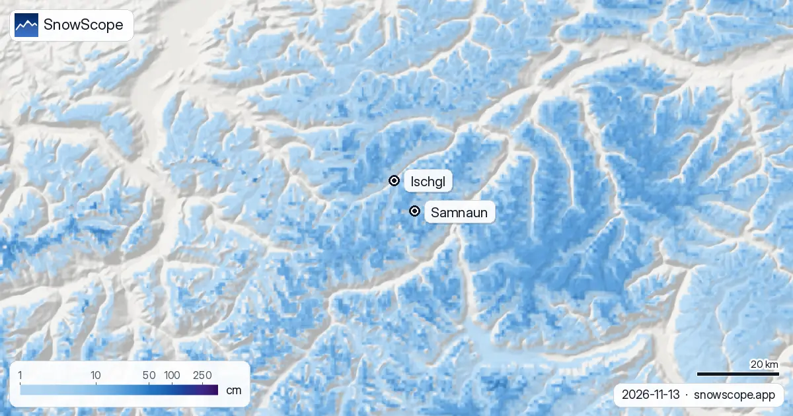

Ischgl Schneehöhe: noch dünn am Silvretta-Grat, bis zu 42 cm diese Woche (13. November 2026)
In Ischgl wird nicht im Dorf Ski gefahren, sondern auf einem hohen Grat darüber, dort, wo das Paznaun an die Schweizer Grenze stößt und auf der anderen Seite Samnaun liegt. Mitte November sucht man den Schnee genau dort. Unsere Karte zeigt heute rund 5 cm am höchsten Punkt des Skigebiets (2868 m), etwa 4 cm an der Mittelstation (2110 m) und nichts auf Talhöhe (1352 m). Ein dünner Anfang, aber eine Woche mit Schnee steht bevor: oben etwa 42 cm.
Die Live-Schneeprognose für Ischgl in der SnowScope-AppSchneehöhen, Pulverschnee-Alarme und 3D-Karte, gratis.
Eine dünne Schicht am Grat
Die letzten sieben Tage brachten oben 17 cm und an der Mittelstation 9 cm, davon 9 cm und 3 cm in den letzten 24 Stunden. Wind auf einem offenen Grat lässt frühen Schnee nicht in Ruhe, und oben liegen jetzt nur rund 5 cm. Im Tal ist diese Woche gar kein Schnee gefallen.

Die Woche: Regen im Paznaun, Schnee ab etwa 1570 m
Für die nächsten sieben Tage erwarten wir rund 42 cm oben, 31 cm an der Mittelstation und 19 cm auf Talhöhe, davon etwa 5 cm oben in den ersten 24 Stunden. Andere Prognosen, mit denen wir vergleichen, geben oben 20 bis 41 cm und an der Mittelstation 16 bis 35 cm. Unsere Zahl liegt also am großzügigen Ende; 30 cm am Grat sind eine faire Wette.
Die Schneefallgrenze liegt um 1570 m. In Ischgl selbst ist vor allem Regen zu erwarten, und weißer Boden beginnt erst ein paar hundert Meter weiter oben an den Hängen.
Tal und Grat: zwei verschiedene Trends
Unsere 46 vergangenen Winter (1980-81 bis 2025-26) zeigen, warum die Bahnen so schnell vom Dorf weg nach oben führen. Auf Talhöhe sank der Höchststand eines mittleren Winters von 90 cm in den ersten 15 Wintern auf 65 cm in den letzten 15. Am Grat ist der Verlust kleiner: oben von 329 auf 303 cm, an der Mittelstation von 205 auf 179 cm.
Ein üblicher November hält 6 cm im Tal, 24 cm an der Mittelstation und 67 cm oben. Der heutige Stand liegt an allen drei Höhen darunter.
Wann Ischgl tief verschneit ist
Der Dezember bringt oben üblicherweise 128 cm und an der Mittelstation 61 cm, der Januar 170 und 95 cm. An der Mittelstation haben 18 Wochen des Winters in 9 von 10 Wintern 50 cm oder mehr, oben 26 Wochen; die sicherste Woche an der Mittelstation ist Woche 13, Ende März. Oben hält sich der Schnee meist bis etwa 30. Juni.
Der letzte Winter lag unter der Mitte: Höchststände von 221 cm oben, 147 cm an der Mittelstation und 64 cm im Tal, gegenüber 313, 184 und 74 cm in einem mittleren Winter. Das kartierte Gebiet über beide Länder zählt 163 km Pisten und 46 Lifte.
Tipps für Skifahrer
- Ischgl nach den Werten am Grat beurteilen, nicht nach dem Tal: Das Dorf bleibt lange grün, nachdem oben schon alles weiß ist.
- Auf den Öffnungstermin und den Pistenbericht des Skigebiets warten: 5 cm am Grat sind noch keine Unterlage.
- Vom Wind verfrachteter Neuschnee am Grenzkamm bildet Triebschneepakete: vor jeder Tour abseits der Piste den Lawinenreport für Tirol lesen, auf der Samnauner Seite das Bulletin des SLF.
Weitere Karten (externe Seiten)
Quellen und Nachweise
- Ischgl, offizielle Website (Lifte, Öffnungstermine, Schneebericht) www.ischgl.com/
- Lawinenreport Euregio Tirol, Südtirol, Trentino avalanche.report/
- SLF, Lawinenbulletin und Schneesituation Schweiz www.slf.ch/
Zu diesen Zahlen
Schneewerte: das SnowScope-Schneemodell, Lauf vom 12. November 2026 für den 13. November, auf drei Höhen des Skigebiets (eine Schätzung für das Gebiet, keine Messungen des Skigebiets), und unsere Schneehistorie, 46 vergangene Winter (1980-81 bis 2025-26), höhenkorrigiert. Spanne und Schneefallgrenze vergleichen andere Wettervorhersagen auf denselben Höhen. Pistenlänge und Liftzahl: OpenSkiMap-Kartierung. Prognosen ändern sich: vor der Abfahrt auf die Karte schauen.
Offizielle Lawinenlageberichte: Avalanche.report – Euregio Tyrol
Diesen Bericht zitieren
Für Forschung, Lehre oder Presse: Zahlen und Grafiken sind unter CC BY 4.0 mit dieser Quellenangabe frei nutzbar.
SnowScope (2026), Ischgl Schneehöhe: noch dünn am Silvretta-Grat, bis zu 42 cm diese Woche (13. November 2026), https://snowscope.app/blog/de/2026/11/ischgl-schneehoehe-silvretta-13-november-2026.html, abgerufen am 2026-11-13
SnowScope (Atlas Labs). (2026, November 13). Ischgl Schneehöhe: noch dünn am Silvretta-Grat, bis zu 42 cm diese Woche (13. November 2026). SnowScope snow reports. https://snowscope.app/blog/de/2026/11/ischgl-schneehoehe-silvretta-13-november-2026.html
BibTeX
@misc{snowscope2026ischglschneehoehesilvret,
author = {{SnowScope (Atlas Labs)}},
title = {Ischgl Schneehöhe: noch dünn am Silvretta-Grat, bis zu 42 cm diese Woche (13. November 2026)},
year = {2026},
month = nov,
howpublished = {\url{https://snowscope.app/blog/de/2026/11/ischgl-schneehoehe-silvretta-13-november-2026.html}},
note = {Published 2026-11-13 12:40 UTC; accessed 2026-11-13}
}· CC BY 4.0 · Methoden, Daten und Werkzeuge →
Ischgl: Schnee und Temperatur nach Höhe, dieser Winter vs letzter (Werkzeuge) →
Ischgl folgen
Gratis: eine Nachricht, wenn Neuschnee kommt, und jeden Morgen die Vorhersage.
Weitere Schneeberichte

Ein günstiger 3-Tage-Plan am Comer See im Dezember mit echten Preisen 2026-27: Züge, Schiffe, Standseilbahn und ein Skitag in Piani di Bobbio oder Madesimo, die Ersparnis gegenüber Cortina und die Chance auf Schnee zu Weihnachten.

Schnee im Dezember hängt vor allem von der Höhe ab. 46 vergangene Winter in 676 Alpen-Skigebieten zeigen, wie viel Schnee am 1., 15. und 22. Dezember zu erwarten ist, von unter 1.200 m bis über 2.400 m.

Wo der Dezember 2026 in den Dolomiten von Gröden bis Cortina schneereicher oder schneeärmer aussieht: die europäische Saisonprognose, unsere Karte und die Chancen auf weiße Weihnachten.